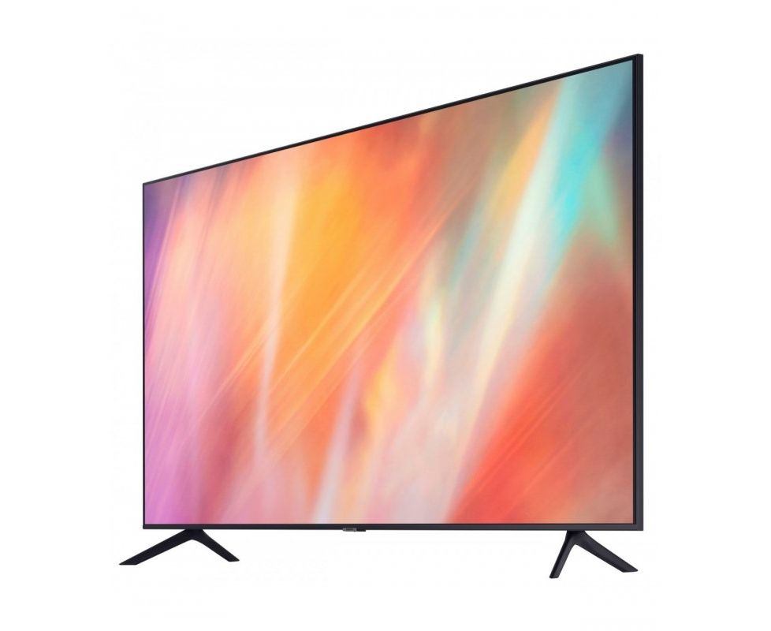
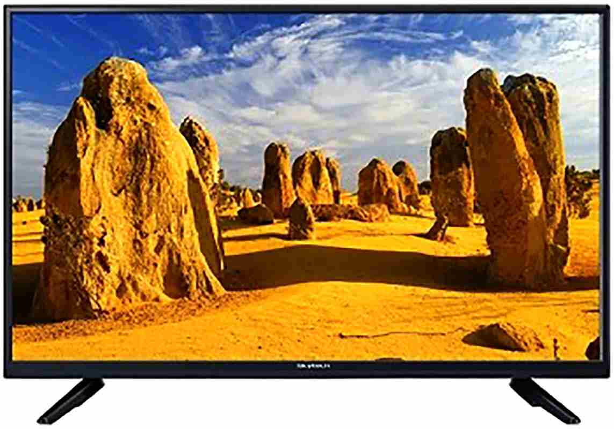
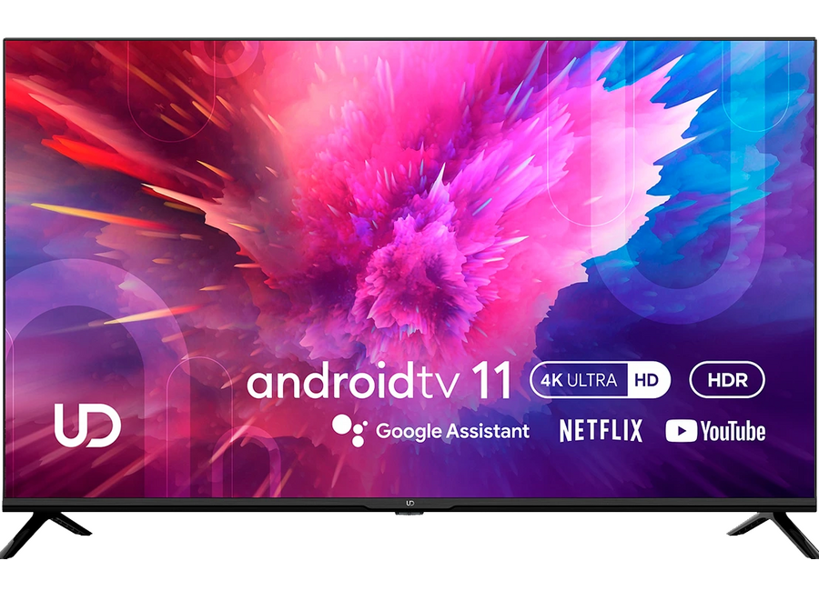

Price: 111$
The Franko FTV-32N4000 TV offers high-quality images with a resolution
of 720p on a 32-inch screen. With a resolution of 1366 x 768 pixels,
it delivers clear and vibrant images for your favorite movies and programs.
This TV is the ideal choice for those looking for an affordable solution with
excellent picture quality for the home.

Price: 96$
The Sky Tech 24DLED STV24N9000 TV is a compact 24-inch 720p (1366 x 768) solution
that delivers crisp images. Equipped with USB and HDMI ports for convenient
connection of various devices. This TV is ideal for small spaces or as a secondary
screen, offering great picture quality at an affordable price.

Price: 236$
The 43-inch UDTV 43U6210 Smart TV offers stunning picture quality with 4K (3840 x 2160)
resolution. Equipped with a host of advanced features including Bluetooth, Wi-Fi, IrDA,
RF, USB, HDMI and Ethernet for the ultimate in connectivity and use. This smart TV is
ideal for those looking for a modern and feature-rich device with crisp, clear pictures
for home entertainment.